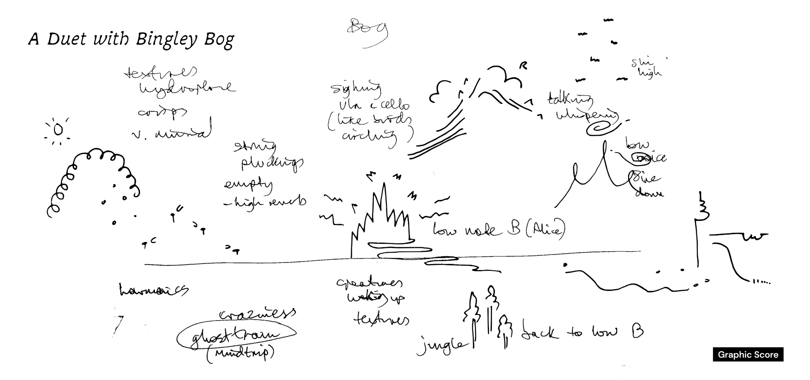
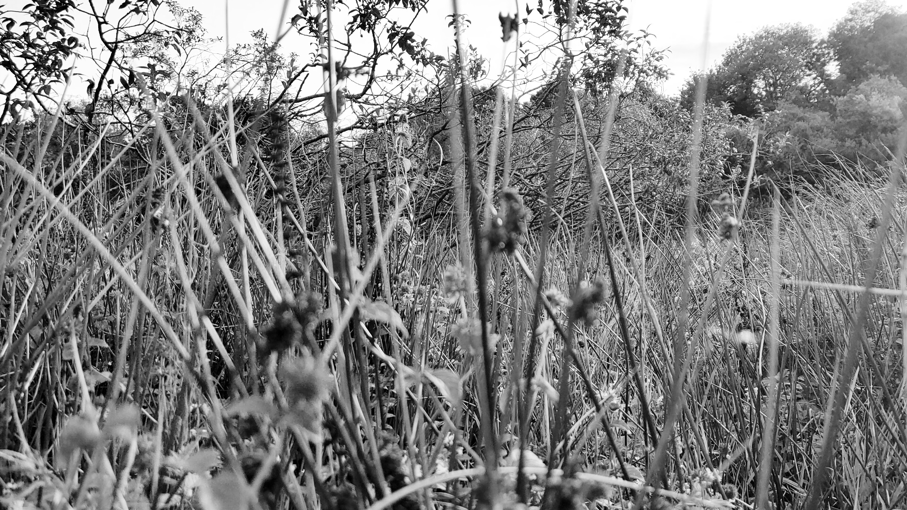

downloads
| WOT | DOWNLOAD LINKS |
|---|---|
| DOWNLOAD ZINE | Bogs_of_Bratfud_shi_Blank.pdf |
| DOWNLOAD GRAPHIC SCORE | A_Duet_with_Bingley_Bog_Graphic_Score_by_Gilank.pdf |
residency
24.10.2026
I feel really fortunate to have been selected for this residency. 3 months really flew by and my improvised performance will happen this Sunday, rain or storm. Sometimes you can get bogged (lol) down with the details of the work but I promised a friend that I would slow down and appreciate the experience in its entirety ~ whenever I can. Hopefully, this deliberate contemplation of my relationship with mother nature has translated across to you through this sharing, be it the field recordings, the zine, the score or the performance.
I'm really looking forward to the improvised performance with Alice and I hope you'll join us for an hour of ambient, strange and hopefully, calming soundscape that is entirely inspired by my visits to the bog.

field recordings
| TITLE | LISTEN |
|---|---|
| Sunrise with Earsight V2 (extended) | |
| Sunrise with JrF C-Series Contact | |
| Sunrise with Earsight V2 | |
| Sunrise (High Pass) with Earsight V2 | |
| Sunset with Earsight V2 | |
| Sunset (High Pass) with Earsight V2 | |
| Sunset with JrF C-Series Ecoutic | |
| Sunset train with Earsight V2 | |
| Sunset with JrF D-Series+ Hydrophones |